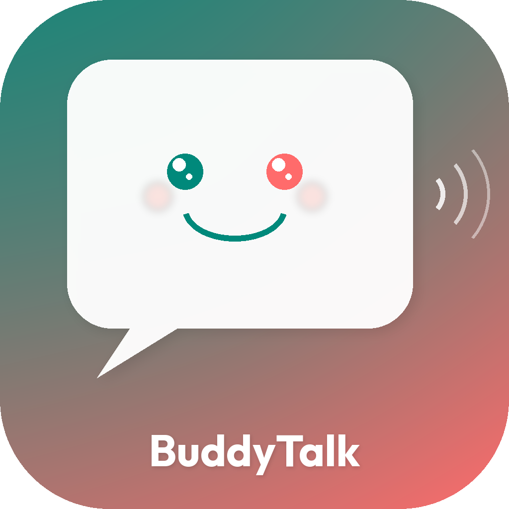

AIパートナーと、毎日話したくなる英会話
個性豊かなAI英語パートナーとリアルな会話練習ができる英語学習アプリです。いつでもどこでも、対話しながら実践的な英会話力を高めましょう。発音評価や英単語ゲームで、楽しく続けられます。

「勉強」ではなく「会話」から始める。だから、続くし、身につきます。
ユニークな性格を持つAI英語パートナーたちと自然な会話。相手を変えれば話題も変わります。
あなたの発音をAIが評価し、詳細なフィードバックを返します。弱点がその場でわかります。
旅行、雑談、会議、面接。幅広いシチュエーションで実践的な英語を練習できます。
楽しく続けられる英単語ゲームと学習トラッキングで、毎日の積み上げが見えます。


無料でダウンロードしてお使いいただけます。より多くの会話や機能はサブスクリプションでご利用いただけます。詳しくはApp Storeをご確認ください。
同じアプリです。「GP Teachers」から「BuddyTalk」に名前が変わりました。
初級から上級まで対応しています。日常会話から始めて、ビジネス英語まで段階的にステップアップできます。
iPhone・iPad（iOS）に対応しています。Android版は準備中です。
trailfusionai@gmail.com までお気軽にご連絡ください。